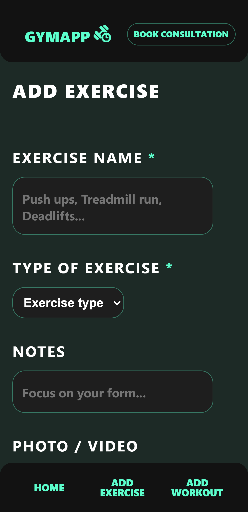

Gym Workout Planner
An accessibility-first workout management application with persistent local storage, built without a backend.
- HTML5
- CSS3
- JavaScript
- IndexedDB
- Accessibility
Overview
The Gym Workout Planner lets users create, manage and track exercises across six categories, with all data stored persistently in the browser using IndexedDB. Accessibility was the primary design constraint from the start, not an afterthought. The interface works fully with keyboard navigation, uses ARIA live regions for dynamic feedback and meets WCAG 2.1 AA colour contrast requirements throughout.
If a crochet pattern needs to be written down to be repeatable, a workout plan needs the same thing. This project is the digital equivalent of writing your sets into a notebook — except the notebook never gets lost and it tells you when something goes wrong.
The Problem
Most gym tracking apps require a subscription, an account or a native install. For users who want a simple, private, offline-capable tool, the browser is the right answer. The specific challenge was building something that persists data meaningfully without a server, while remaining fully accessible to users relying on assistive technology.
Design
Accessibility shaped the design before any visual decisions were made. The brief required WCAG 2.1 AA compliance at minimum; I targeted AAA contrast (7:1) across all text. This meant ruling out interaction patterns that are straightforward with a mouse but awkward with a keyboard: no drag-and-drop reordering, no hover-only controls, no custom dropdown components that would require reimplementing native <select> behaviour from scratch. If an interaction cannot be performed with only a keyboard, it was replaced with one that can.
The data model was sketched before the interface. Exercises and routines are separate entities: an exercise record stores a name, category, sets, reps and an optional weight, while a routine is an ordered list of exercise IDs. This separation means a single exercise can appear in multiple routines without duplicating its data. Defining the schema up front forced the UI to reflect the real data structure rather than growing ad hoc in ways that would be hard to refactor.
Colour choices were driven by contrast headroom rather than aesthetics first. The teal primary sits comfortably above 7:1 against both white and the off-white surface backgrounds, leaving room to use it on interactive elements without additional overrides. Typography uses em units throughout so that the easy read mode base font-size increase scales the entire interface without breaking any fixed-pixel measurements.
The Solution
IndexedDB was chosen over localStorage for two concrete reasons. First, it stores structured JavaScript objects directly without requiring the entire dataset to be JSON-serialised and deserialised on every read or write. Second, it has no practical size limit for the volumes a personal workout planner would generate, whereas localStorage is capped at around 5MB per origin. Exercises and routines live in separate object stores, each with a unique auto-generated key. The database layer exposes a clean API of get, getAll, add, update and delete functions returning Promises, so the UI never interacts with IndexedDB directly.
All user input is sanitised before any write to the database. Text fields are processed with String.trim() to remove accidental leading and trailing whitespace. Numeric fields — sets, reps and weight — are validated with Number.isFinite() and confirmed to be positive before being accepted. Entries that fail validation are rejected with an inline error message; they are never silently coerced to a default value. This keeps stored data clean and means the application never has to handle corrupted entries at read time.
Form validation uses standard HTML attributes alongside JavaScript. Each field has an explicit <label for=""> association, a required attribute and an aria-describedby pointing to a dedicated error <span>. On failed submission, aria-invalid="true" is set on each failing field and its error span becomes visible. This pattern works across all assistive technologies, not just screen readers, because it uses the same mechanisms that native browser validation uses.
A role="status" live region sits at the bottom of the DOM and is updated whenever an exercise is added, edited or deleted. Announcements like "Bench Press added to Chest exercises" or "Squat deleted" are read by screen readers without moving focus, so the user stays in their current position while still receiving confirmation that the action completed.

Development Process
The project was built in three phases. Phase one was the data layer: writing and testing the IndexedDB wrapper in complete isolation, with no UI attached. This approach mirrors building the foundation of a pattern swatch before starting the main piece — it made the storage logic independently testable and gave the interface a stable API to build against rather than coupling UI components directly to database calls.
Phase two was the exercise management interface, with keyboard navigation tested at every milestone rather than added at the end. After each new component was built, Tab order was verified manually. Focus management required explicit work throughout: after adding an exercise, focus moves programmatically to the new list item via .focus(); after deleting one, focus moves to the preceding item, or to the add button if the list is now empty. Without this, a screen reader user would lose their position on every action and have to re-navigate from the top of the list.
The specific WCAG success criteria targeted were:
- 1.3.1 Info and Relationships — all form fields use explicit
<label for="">associations; the exercise list uses semantic<ul>withrole="list"; heading levels reflect content hierarchy - 2.1.1 Keyboard — every action available by mouse is available by keyboard; no keyboard traps at any point in the interface
- 4.1.3 Status Messages — the
role="status"live region announces add, edit and delete confirmations without requiring focus movement - 1.4.6 Contrast Enhanced — all text elements verified at 7:1 or above against their background colours
Testing used three methods in combination: axe DevTools for automated scanning to catch structural issues, missing labels and contrast failures; manual keyboard testing covering Tab, Shift+Tab, Enter and Escape through all flows; and NVDA with Chrome for screen reader testing to confirm that live region announcements were delivered correctly and that focus management felt natural rather than disorienting.

Outcome and Reflection
The finished application handles all six exercise categories with full CRUD operations, persists data across sessions and passes keyboard and screen reader testing. The accessibility groundwork added significant development time in the early phases but removed what would have been a much larger retrofit effort later, and produced an application that works reliably with assistive technology rather than merely tolerating it.
The main thing I would change is the IndexedDB abstraction layer. It works, but it grew function by function rather than being designed as a class up front. There is repeated error-handling logic across the get, add and update paths that a class-based wrapper with a shared error handler would consolidate. That refactor would also make adding new object stores straightforward, whereas extending the current implementation requires repeating the same boilerplate in each new function.